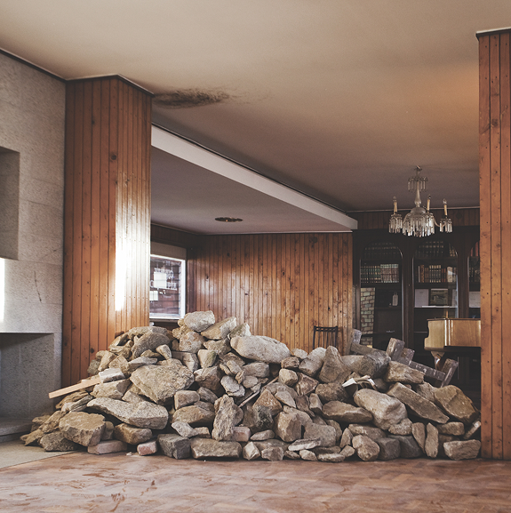

HóSPEDE explores the relationships between artists, analysing the conceptual, ideological and formal cross-pollinations that can occur within the context of artistic practice. Works by different artists from a variety of disciplines are featured, resulting in a project comprising the relationships established between eight artists and an exhibition space - the Duplex Flat in the Parnaso Building, designed by architect José Carlos Loureiro.
As a result of working together in the studio, and of the relationships and collaborations between the artists, the artistic projects are inevitably influenced - essentially in an unconscious way - by the practices and ideologies of their peers. In HóSPEDE, spontaneous cross-pollination has been combined with induced cross-pollination, forming part of the premises underlying the production of the works commissioned specifically for the exhibition. Two artists interpret each other’s work, making use of mutual formal and conceptual codes, and in a way, confront and engage in dialogue with their own creative practice and process. One of the issues we aim to analyse here is relationality within artistic practices. Another object of research is a possible dilution of authorship, in the reaffirmation of a community spirit, and a consequent artistic appreciation amongst peers.
HóSPEDE raises three central questions: the influence of peers on artists’ studio work, the intersection between art and design, and curatorial specificities such as the exhibition of an independent publication. These questions hint at many others that lie implicit within them.
HóSPEDE - Ensaio Curatorial
Parnaso, Porto
19-28.04.2012
Heart of Glass - Associação Cultural
Valdívia Tolentino, Luís Pinto Nunes, Luís Albuquerque Pinho
Dário Cannatà, Diana Carvalho, Rita Faustino, Sarah Klimsch, Jonas Lewek, Nikolas Sisic, José Oliveira
Sofia Romualdo
Recital of Works by Fernando Corrêa de Oliveira: Pianist Joana Resende and Cellist Gisela Neves; Curatorship at Parnaso - Guided Tour and Conversation with the Artists: Exhibiting Artists, Curators and Prof. Dr. Lúcia Almeida Matos; Architectural Tour of the Parnaso Building: Architect Luciana da Rocha and Architect José Carlos Loureiro; The Parnaso School, The Project by Fernando Corrêa de Oliveira: Pianist Joana Resende and Daniel Corrêa de Oliveira; Cinema at Parnaso - Dead Ringers (1988), David Cronenberg; Introduction by Lídia Queirós - Contamination in Film Production
Universidade do Porto, Antalis, Faculdade de Belas Artes da Universidade do Porto, Parnaso, Sempre Imagem Digital, Tintas Moldursant, Porto Rico